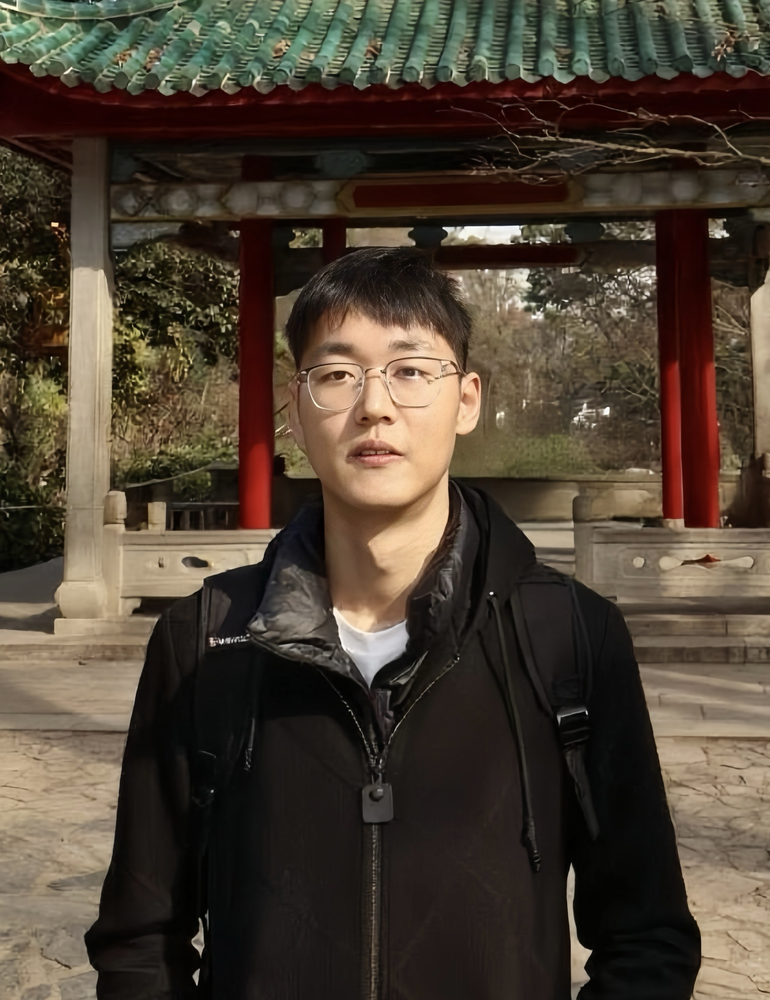

Dawei Zhou (City University of Macau)
Home
 |
Dawei Zhou
Assistant Professor
Faculty of Data Science, City University of Macau.
Address: Av. Padre Tomas Pereira Taipa
Macao SAR, China.
E-mail: dwzhou [at] cityu.edu.mo; dwzhou.xidian [at] gmail.com
[Google Scholar]
[ORCID]
[DBLP]
|
Biography
I am an assistant professor in the Faculty of Data Science, City University of Macau. My research interests mainly include trustworthy machine learning (e.g., adversarial robustness, privacy protection, forgery detection) and reliable AI for healthcare (e.g., robust automatic diagnosis, medical artifact remove, multi-modal data generation).
Prior to that, I received my Ph.D. degree in information and telecommunications engineering and B.Sc. degree in telecommunications engineering from Xidian University in 2024 and 2019, respectively, advised by Prof. Nannan Wang. During my Ph.D., I was fortunate to be a remote visiting student in the TML lab (Trustworthy Machine Learning Lab) headed by Prof. Tongliang Liu.
Over the years, I have served as conference program committee/reviewer for several top-tier conference and journals, such as Conference on Neural Information Processing Systems (NeurIPS), International Conference on Machine Learning (ICML), International Conference on Learning Representations (ICLR), IEEE/CVF Conference on Computer Vision and Pattern Recognition (CVPR), International Conference on Computer Vision (ICCV), IEEE Transactions on Image Processing (IEEE TIP) and IEEE Transactions on Neural Networks and Learning Systems (IEEE TNNLS).
Research Interests
My research interests lie in machine learning, computer vision and computer-aided healthcare. Specifically, my current research work center around three major topics towards trustworthy deep learning and its applications:
Deep Learning Robustness: Promoting AI's robustness against adversarial or real-world perturbations or noise from the perspectives of data, model and decision making. Reliable AI for healthcare: Constructing high-quality data and robust models for reliable applications of AI in clinical diagnosis and treatment. Privacy Protection: Protecting privacy and critical information used in AI to prevent leakage and forgery.
|